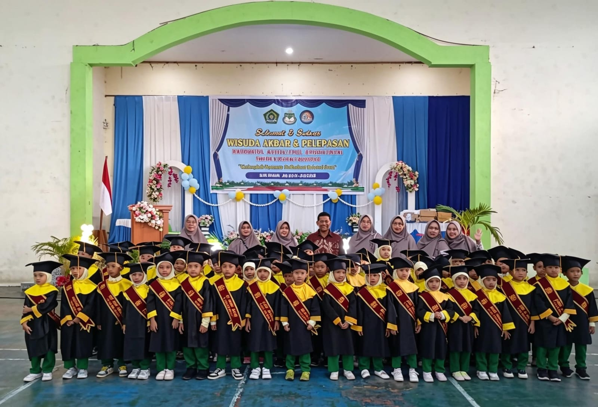
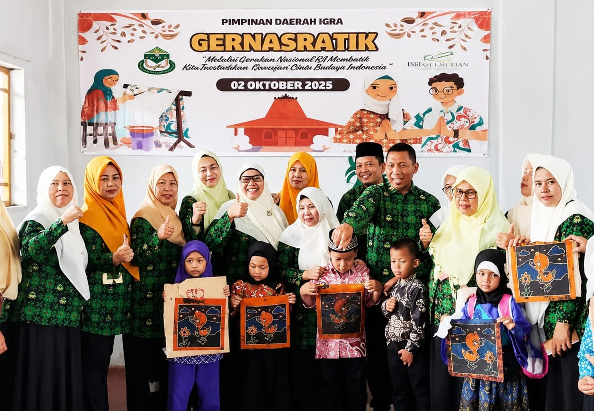
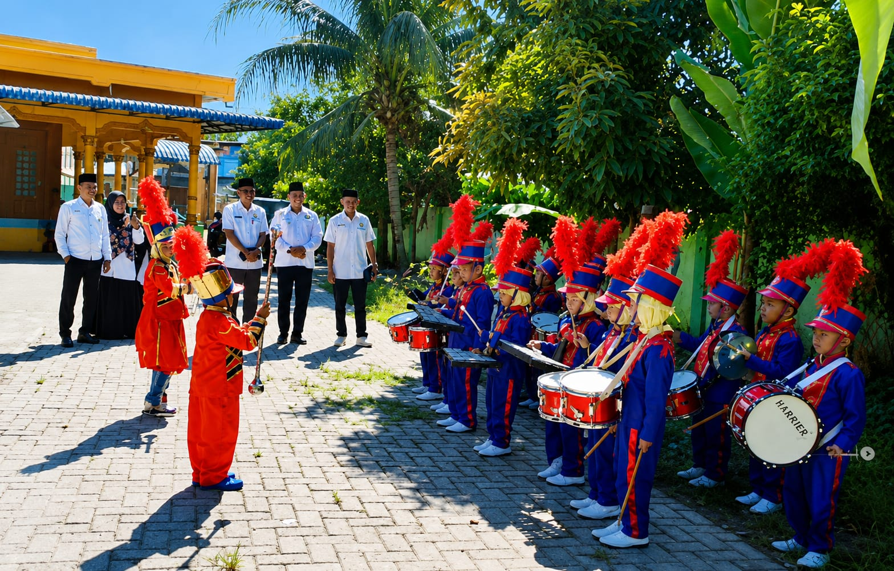
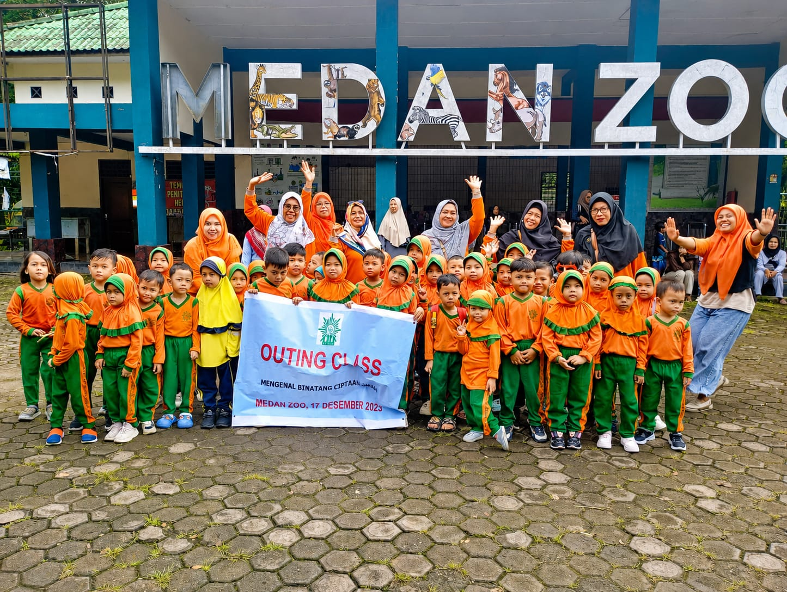
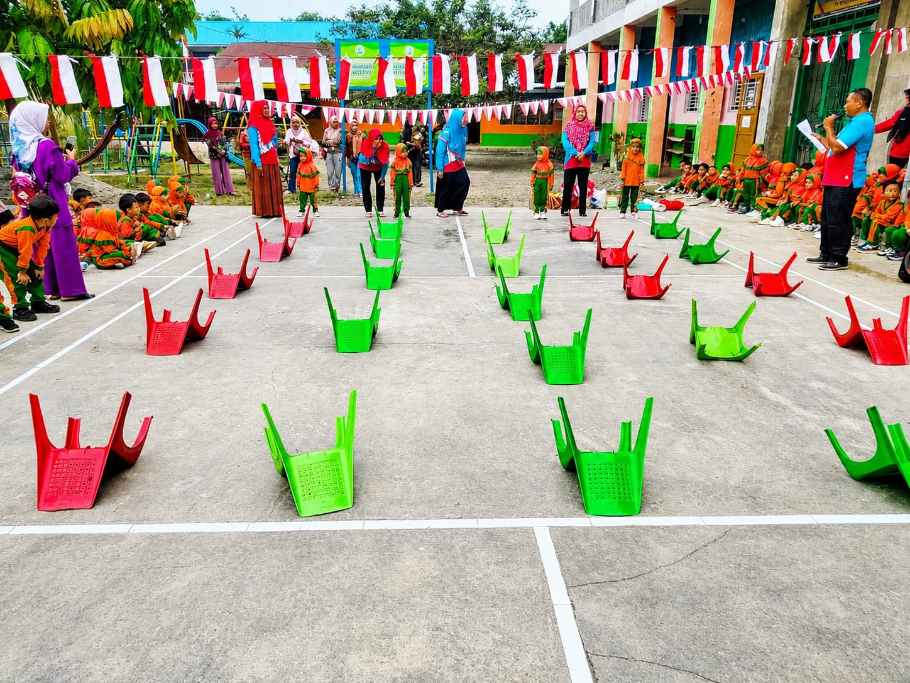
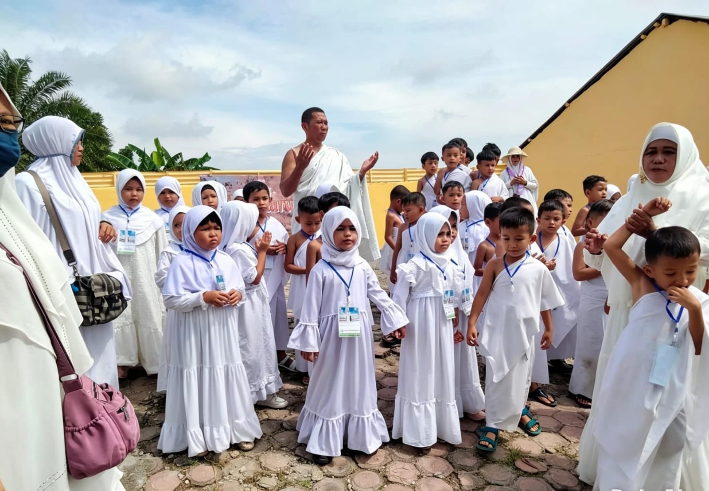
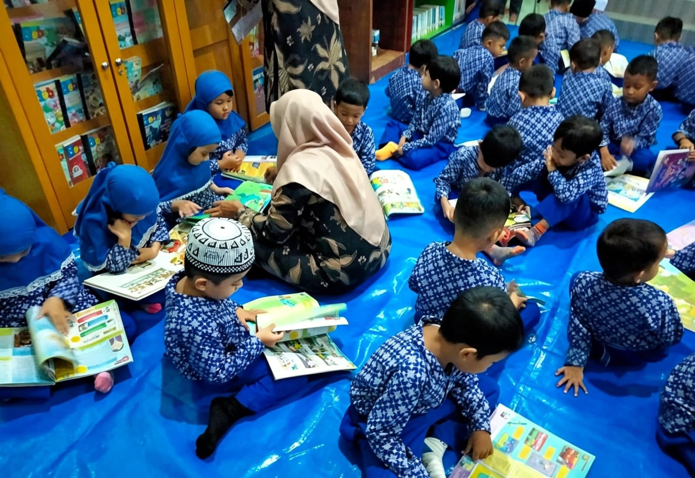
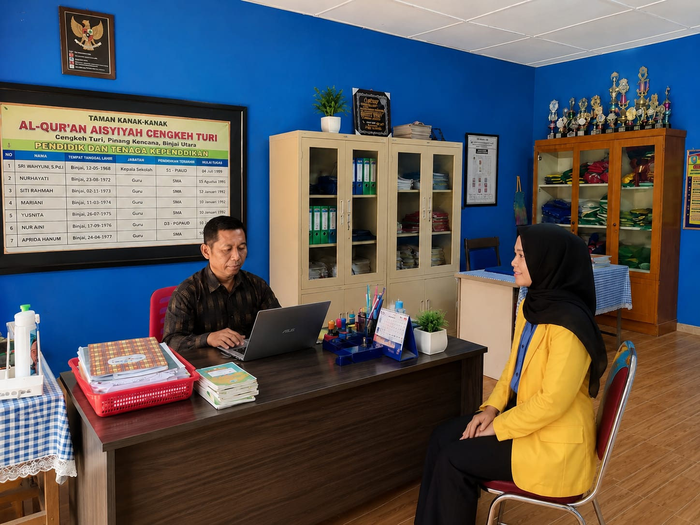

Juni 2026
Suasana haru dan bangga menyelimuti acara Wisuda Akbar RA Aisyiyah...

02 Oktober 2025
RA Aisyiyah turut memeriahkan Gerakan Nasional RA Membatik...

27 Mei 2025
Menyambut Bapak Kakan Kemenag Kota Binjai dalam acara Sosialisasi...

2025
Belajar tidak hanya di kelas. Ananda senang sekali saat outing class...

15 Agustus 2024
Semangat kemerdekaan! RA Aisyiyah merayakan HUT RI ke-79...

2024
Ananda mengikuti simulasi manasik haji bersama RA se-Kota Binjai...

2024
Menumbuhkan minat baca sejak dini. Ananda berkunjung ke Perpustakaan...

2026
Mahasiswa ITB Indonesia kampus Tandem izin membuat website RA Aisyiyah sebagai...